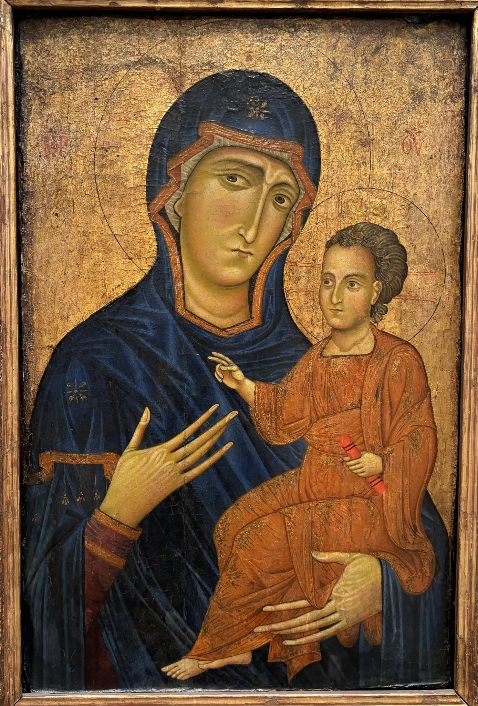
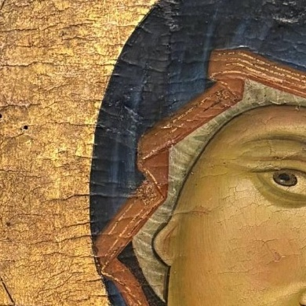
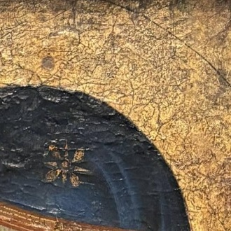
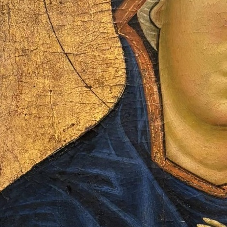
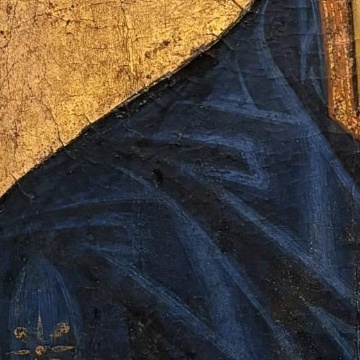

Icône byzantine
Une image sacrée qui rend présent le divin

Vierge à l’Enfant — tradition byzantine. Image source conservée sans modification.

VisageFrontal, hiératique, très codifié. Le réalisme n’est pas le but : le regard paraît intemporel.

Fond d’orIl symbolise le monde divin, hors du temps : ce n’est pas un espace réel.

CorpsPeu perceptible sous les vêtements. Le volume reste secondaire.

GesteCodifié et symbolique : la présence sacrée prime sur l’instant quotidien.
L’icône n’est pas une simple représentation.
Elle ne cherche pas d’abord à ressembler à une personne réelle. Elle rend présent le sacré et permet une relation avec lui : présence, éternité et spiritualité priment sur le réalisme et la perspective.
Elle ne cherche pas d’abord à ressembler à une personne réelle. Elle rend présent le sacré et permet une relation avec lui : présence, éternité et spiritualité priment sur le réalisme et la perspective.